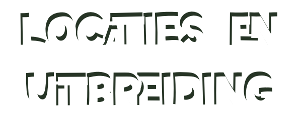
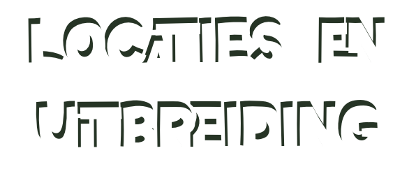

Uitbreiding
Toen ik voor het eerst hoorde over Green Farmer’s, was ik meteen nieuwsgierig naar hun concept.
Dit plantaardige restaurant begon in Parijs en breidde zich al snel uit naar andere steden, waaronder Amsterdam, waar ik het nu zelf heb ervaren.
Locatie Amsterdam
De vestiging in Amsterdam, gelegen aan de Westerstraat, is mijn eerste kennismaking met Green Farmer’s. De sfeer is ontspannen en de gerechten zijn innovatief.
Wat me opviel, is de focus op duurzaamheid en de manier waarop plantaardig eten toegankelijk wordt gemaakt voor iedereen. Het menu biedt veel opties, van burgers tot salades, allemaal gemaakt met zorg voor de natuur en de smaakpapillen.
Mijn Ervaring
Mijn ervaring tot nu toe Hoewel ik nog niet in Parijs ben geweest, ben ik heel blij dat ik de Amsterdamse vestiging heb bezocht. Ik ben benieuwd hoe het concept zich zal ontwikkelen en kan niet wachten om te zien waar ze nog meer naartoe zullen gaan. Wat mij aanspreekt, is hoe ze plantaardig eten voor iedereen toegankelijk maken – zelfs voor mensen zoals ik, die niet veganistisch zijn maar wel nieuwsgierig naar nieuwe smaken.